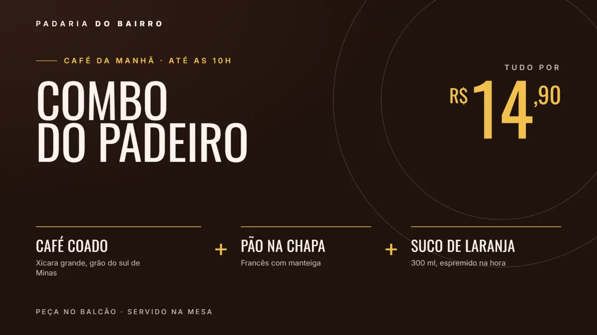
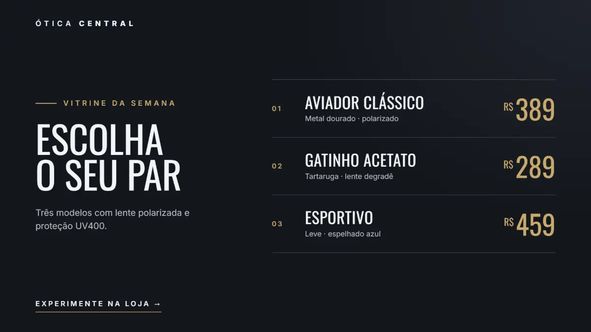
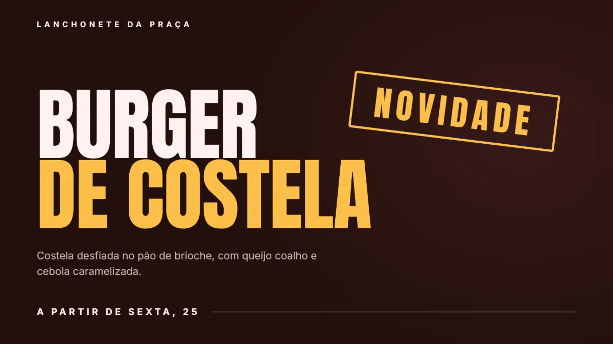

TV com IA para empresas, clínicas e lojas
A TV do seu negócio sempre em dia, sem você mexer.
Você fala o que quer mostrar, tipo “pão de queijo em dobro à tarde” ou “a vacina da gripe chegou”. A IA monta a peça com a sua marca e a TV muda na hora. Na TV ou no box que você já tem.
Sem cartão · 20 criações com IA no teste · depois, uma TV segue no ar de graça



Peças de exemplo feitas pelo MultiTelas, com a marca de negócios fictícios.
Um MultiTelas para cada lugar
MultiTelas Empresas
Comunicação interna: avisos, RH, aniversariantes, metas e segurança nas TVs da equipe.
Conhecer →MultiTelas Saúde
Sala de espera de clínica e consultório: orientação, serviços, prevenção e convênios.
Conhecer →MultiTelas Comércio
Loja, restaurante e serviço: ofertas, cardápio, novidades e redes sociais na vitrine.
Conhecer →Um lugar ou uma rede
Todas as TVs. Um só painel.
Cada TV com o seu conteúdo, ou todas com o mesmo. Publique do celular e veja de onde estiver o que está passando em cada uma.
Testar 14 dias grátisComo funciona
Três passos, e o primeiro só se faz uma vez.
-
1
Ligue a TV
Abra o MultiTelas no navegador da Smart TV, num box Android ou num computador ligado à TV. Aparece um QR: aponte o celular e pronto, ela é sua.
-
2
Diga o que mostrar
Oferta, aviso, orientação, recado da equipe. Escreva uma frase; a IA monta a peça com as cores e as letras da sua marca. Ou suba uma foto ou vídeo do celular.
-
3
Publique
A TV muda na hora. Escolha os horários, e veja de onde estiver o que está passando na tela.
Feito para o seu tipo de negócio
Peças de exemplo, feitas pelo motor do MultiTelas com a marca de cada negócio. Os negócios são fictícios; as peças, não.
Vitrine da semana
Três modelos com preço, na cor da ótica. Troca o produto ou o preço, a TV acompanha.
TV corporativa, mídia indoor e digital signage
Digital signage, ou sinalização digital, é usar telas para comunicar: ofertas na vitrine, cardápio no balcão, avisos para a equipe. O MultiTelas faz isso na TV que você já tem.
TV corporativa
Comunicação interna na recepção, no refeitório e na produção: comunicados, aniversariantes do mês, segurança do trabalho e mural de fotos da equipe.
Mídia indoor para o varejo
TV indoor que vende: promoção com preço, lançamento, cardápio digital e formas de pagamento, com a cor e as letras da sua marca.
Sinalização digital sem aparelho caro
Smart TV, box Android ou computador. Várias zonas na mesma tela, várias TVs num só painel, e a tela segue no ar mesmo sem internet.
O que vem junto
Funciona sem internet
A TV guarda o que recebeu e segue mostrando se a internet cair.
Horário de funcionamento
Fora do expediente, a TV pode ficar preta ou mostrar só o relógio. Você escolhe.
Ver a tela agora
Do celular, veja o que está passando em cada TV, sem sair de onde está.
Foto e vídeo do celular
Mande da galeria para a TV; a foto entra inteira, sem cortar. No Android, com o painel instalado, dá para compartilhar direto da galeria.
A mesma peça nas redes
Vira post e story prontos para o Instagram, com o texto e as hashtags. Você baixa ou compartilha pelo celular.
TV deitada ou em pé
A peça se ajusta à tela, de lado ou na vertical, em qualquer tamanho.
Mural de fotos por QR
Quem está no lugar manda fotos pelo celular; você tira da tela qualquer uma com um toque.
Aniversariantes
Suba a lista uma vez; a TV mostra quem faz aniversário na semana.
Relatório de exibição
Quantas vezes e por quanto tempo cada peça passou, em cada TV.
O preço depende do seu tipo de negócio
Cada versão do MultiTelas vem pronta para um tipo de lugar — os modelos, o jeito de a IA escrever e o que aparece no painel — e tem o seu preço, por TV. Escolha a sua para ver quanto fica.
Comércio
Loja, restaurante, padaria, salão, ótica, academia.
Ver o preço do Comércio →Saúde
Clínica, consultório, odontologia, laboratório, farmácia.
Ver o preço da Saúde →Empresas
Comunicação interna: indústria, escritório, logística, call center.
Ver o preço de Empresas →Em todas: 14 dias grátis sem cartão, preço por TV, mensal sem fidelidade ou anual mais barato, e a TV que você já tem.
Preço, às claras
Por TV, por mês. Se a sua TV já tem navegador, ou você já tem um box, é R$ 0 de equipamento.
Teste
14 dias
grátis, sem cartão
- ✓ 1 TV de verdade, na parede
- ✓ 20 criações com IA
- ✓ Todo o editor e os modelos
- ✓ Depois, uma TV segue no ar com um selo discreto
Essencial · mensal
R$ 79/TV
por mês, sem contrato
- ✓ 85 criações com IA por mês, por conta (até 228 com mais TVs)
- ✓ Modelos prontos, banco de imagens e 10 GB por TV para fotos e vídeos
- ✓ Equipe, mural, aniversariantes, relatório e som
- ✓ Cancela quando quiser, pelo próprio painel; vale até o fim do mês pago
Essencial · anual
a partir de R$ 51/TV
por mês, contrato de 12 meses
- ✓ até 3 TVs: R$ 64 cada
- ✓ da 4ª à 10ª: R$ 57 cada
- ✓ da 11ª à 25ª: R$ 51 cada
- ✓ 26 TVs ou mais: a combinar
Multa: cancelar antes dos 12 meses custa 30% das mensalidades que faltam. Com os 12 meses cumpridos, não há multa.
Falar com a genteEm breve: Pro — ainda não disponível para assinar. Vai trazer a IA integrada em tudo: a programação se monta sozinha a partir do calendário (/TV). Hoje, o Essencial já traz a IA com a sua marca e as telas prontas.
Quanto fica na sua loja?
Arraste até o número de TVs.
3 TVs
Com 3 TVs: R$ 237 por mês no mensal, ou R$ 192 por mês no anual.
Sua TV não apaga de surpresa. Atrasou: avisamos; com 10 dias aparece um selo discreto no canto; com 20, a IA pausa e só a primeira TV segue no ar até o pagamento.
Perguntas
O que é digital signage?+
É sinalização digital: usar telas para mostrar ofertas, cardápios, avisos e informações num ambiente. Também é chamado de mídia indoor, TV indoor ou TV corporativa. Com o MultiTelas, você publica pelo celular e a TV muda na hora.
Serve como TV corporativa para a equipe?+
Serve. Há modelos de comunicado interno, aniversariantes do mês, boas-vindas, vagas e segurança do trabalho, e o mural de fotos por QR. Cada TV pode mostrar uma coisa diferente. Veja o MultiTelas Empresas.
Por que o preço depende do tipo de negócio?+
Cada versão vem pronta para um tipo de lugar — os modelos, o jeito de a IA escrever e o que aparece no painel — e tem o seu preço. Você escolhe a versão no cadastro, pelo tipo do seu negócio; se ela não combinar com o negócio, o suporte ajusta, avisando antes.
Preciso comprar algum aparelho?+
Não. Serve a Smart TV com navegador, um box Android ou um computador ligado à TV. É só abrir o endereço do MultiTelas nela.
E se a internet cair?+
A TV continua mostrando o que já recebeu. Quando a internet volta, ela pega as novidades sozinha.
O que é uma "criação"?+
Uma imagem feita pela IA: a foto, o fundo, a ilustração. Os textos e as peças sem foto não contam. Acabaram as do mês? A TV segue no ar e você continua com os modelos prontos, o banco de imagens e as suas fotos.
Posso cancelar?+
No mensal, quando quiser, pelo próprio painel: o plano vale até o fim do mês já pago e, depois, uma TV segue no ar com o selo. O anual é um contrato de 12 meses: cancelar antes tem multa de 30% das mensalidades que faltam; com os 12 meses cumpridos, não há multa. E, contratando pela internet, você pode desistir em até 7 dias e recebe de volta o que pagou. Está tudo nos termos de uso.
E se eu atrasar uma fatura?+
A tela não apaga de surpresa. Avisamos com 3 dias; com 10, aparece um selo discreto no canto da TV; com 20, criar com IA e ligar telas novas ficam pausados e só a primeira TV segue no ar. Pagou, tudo volta na hora.
Funciona com TV em pé?+
Sim. A peça se ajusta à tela, deitada ou em pé, e você também pode girar a imagem pelo painel.
E os meus dados?+
São seus. Pelo painel você baixa tudo ou pede a exclusão da conta, quando quiser. Veja a política de privacidade.
Fale com a gente
Dúvida, vários lugares, contrato anual ou ajuda para instalar: chama que a gente responde.